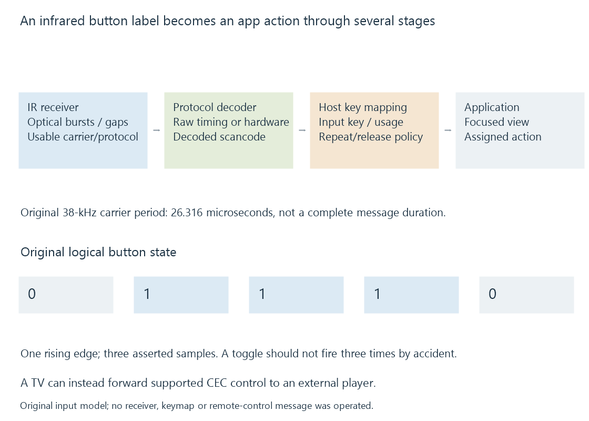

Infrared remote controls
An infrared remote sends coded light pulses to a compatible receiver, whose decoding and key mapping determine the input delivered to an application.
An infrared remote sends modulated light carrying an encoded command. The receiver must detect that signal, interpret its protocol and map the resulting command into a usable host input.
A handset’s button label does not directly call an Emby function.
Light modulation and commands have different timing
Many consumer arrangements use a modulated carrier whose bursts and gaps encode the command. The exact protocol determines the message structure.
For an original 38-kHz carrier exercise:
Carrier period = 1 / 38,000 second = 26.316 microseconds
That period is not the duration of a complete button message. A message uses a sequence of carrier bursts and gaps across a longer interval.
A receiver designed for the wrong carrier/protocol can fail before the application receives any meaningful key. Infrared also needs a usable optical path; the receiver’s view and surrounding light conditions can affect detection.
Reception, decoding and key mapping are separate stages

The Linux remote-controller documentation provides a concrete implementation example. Some hardware supplies raw timings for software decoding; other hardware supplies decoded scancodes.
A scancode identifies the received command within its protocol/device context. A keymap assigns a host key meaning. The focused app then interprets that host input.
The same handset can therefore work differently through two receivers or host mappings.
Repeated reports need an action policy
A held key can produce repeated protocol reports. Some arrangements synthesize a release after an appropriate timeout rather than receiving a separate physical release message.
Use an original logical-state exercise:
Reported button state: 0, 1, 1, 1, 0
Rising-edge actions: 1
A toggle action triggered by every observed 1 would run three times. Triggering the initial transition runs once.
Navigation can intentionally repeat while a button remains held; Play/Pause usually needs a different repeat policy. The protocol decoding alone does not choose the application’s desired behavior.
A TV remote may take another route onward
If the TV receives the infrared command and forwards a supported CEC control, the external Emby player receives that later route rather than the original optical pulses.
If a USB IR receiver is connected to the player, the host may expose mapped input directly through its input system.
Emby’s keyboard and remote documentation describes application-side control context. Identifying the original receiver, host event and focused view makes an input problem more precise than saying only that the remote is compatible.